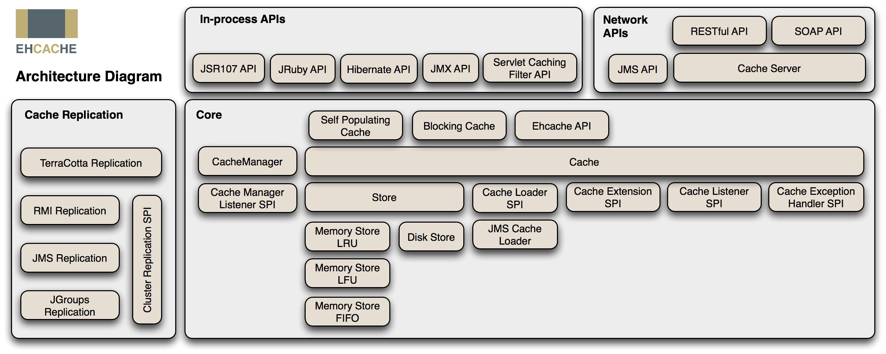
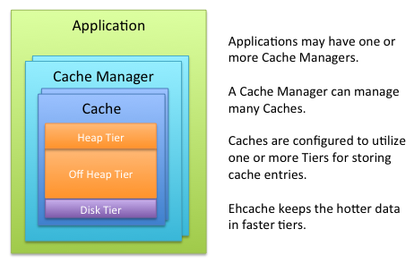

Java Cache 入门
什么是缓存
术语缓存在计算机中无处不在。在应用程序设计的上下文中，它经常被用来描述应用程序开发人员利用单独的内存或低延迟的数据结构。缓存，用于临时存储或缓存信息的副本或引用，应用程序可能会在稍后的某个时间点重复使用，从而减轻重新访问或重新创建它的成本。
在 JCache 的上下文中，术语缓存描述了 Java 的技术开发人员使用缓存提供程序临时缓存 Java 对象。
什么时候引入缓存
引入缓存会提高系统复杂度，因为你要考虑缓存的失效、更新、一致性等问题。
冒着上述种种风险，仍能说服你引入缓存的理由，总结起来无外乎以下两种：
- 为缓解 CPU 压力而做缓存：譬如把方法运行结果存储起来、把原本要实时计算的内容提前算好、把一些公用的数据进行复用，这可以节省 CPU 算力，顺带提升响应性能。
- 为缓解 I/O 压力而做缓存：譬如把原本对网络、磁盘等较慢介质的读写访问变为对内存等较快介质的访问，将原本对单点部件（如数据库）的读写访问变为到可扩缩部件（如缓存中间件）的访问，顺带提升响应性能。
请注意，缓存虽然是典型以空间换时间来提升性能的手段，但它的出发点是缓解 CPU 和 I/O 资源在峰值流量下的压力，“顺带”而非“专门”地提升响应性能。这里的言外之意是如果可以通过增强 CPU、I/O 本身的性能（譬如扩展服务器的数量）来满足需要的话，那升级硬件往往是更好的解决方案，即使需要一些额外的投入成本，也通常要优于引入缓存后可能带来的风险。
缓存设计模式
Cache Aside
其中最简单、成本最低的 Cache Aside 模式是指：
- 读数据时，先读缓存，缓存没有的话，再读数据源，然后将数据放入缓存，再响应请求。
- 写数据时，先写数据源，然后失效（而不是更新）掉缓存。
读数据方面一般没什么出错的余地，但是写数据时，就有必要专门强调两点：一是先后顺序是先数据源后缓存。试想一下，如果采用先失效缓存后写数据源的顺序，那一定存在一段时间缓存已经删除完毕，但数据源还未修改完成，此时新的查询请求到来，缓存未能命中，就会直接流到真实数据源中。这样请求读到的数据依然是旧数据，随后又重新回填到缓存中。当数据源的修改完成后，结果就成了数据在数据源中是新的，在缓存中是老的，两者就会有不一致的情况。另一点是应当失效缓存，而不是去尝试更新缓存，这很容易理解，如果去更新缓存，更新过程中数据源又被其他请求再次修改的话，缓存又要面临处理多次赋值的复杂时序问题。所以直接失效缓存，等下次用到该数据时自动回填，期间无论数据源中的值被改了多少次都不会造成任何影响。
Cache Aside 模式依然是不能保证在一致性上绝对不出问题的，否则就无须设计出 Paxos 这样复杂的共识算法了。典型的出错场景是如果某个数据是从未被缓存过，请求会直接流到真实数据源中，如果数据源中的写操作发生在查询请求之后，结果回填到缓存之前，也会出现缓存中回填的内容与数据库的实际数据不一致的情况。但这种情况的概率是很低的，Cache Aside 模式仍然是以低成本更新缓存，并且获得相对可靠结果的解决方案。
Read/Write Through
Write Through 将数据同时写入高速缓存和相应的主内存位置。缓存的数据允许按需快速检索，而主存储器中的相同数据可确保在发生崩溃，电源故障或其他系统中断时不会丢失任何内容。
尽管直写可以最大程度地减少数据丢失的风险，但是每个写操作必须执行两次，并且这种冗余需要时间。活动的应用程序必须等待，直到将每个数据块都写入主内存和高速缓存中，然后才能开始下一个操作。因此，“数据保险”是以牺牲系统速度为代价的。
直写是无法容忍数据丢失的应用程序（例如银行和医疗设备控制）中首选的数据存储方法。
Write Behind Caching
回写在每次发生更改时，数据都会先写入高速缓存，但仅在指定的时间间隔或特定条件下，数据才会写入主存储中的相应位置。
JSR107 (JCache)
JCache 是 Java 的缓存 API。它由 JSR107 定义。它定义了供开发人员使用的标准 Java 缓存 API 和供实现者使用的标准 SPI（“服务提供者接口”）。
JCache 核心概念
Java 的缓存 API 定义了五个核心接口：CachingProvider，CacheManager，Cache，Entry 和 ExpiryPolicy。
CachingProvider
定义了建立，配置，获取，管理和控制零个或多个 CacheManager 的机制。应用程序可以在运行期间访问和使用零个或多个 CacheProvider。
CacheManager
定义在上下文中了建立，配置，获取，管理和控制零个或多个唯一命名的缓存的机制。 CacheManager 被单个 CachingProvider 拥有。
Cache
是一个像 Map 一样的数据结构，它允许基于 Key 的临时储存。缓存被单个 CacheManager 拥有。
Entry
是被 Cache 存储的单个 key-value 对，JCache 允许我们定义按值或按引用来存储条目。
ExpiryPolicy
每一个被 Cache 存储的 entry 都定义了存活时间，被称作过期持续时间。**缓存过期时间是可以动态设置的，在执行某些缓存操作后，缓存条目将在设置的时间后过期。**一旦这个过期时间到达，该条目就被认为是过期了。一旦过期，就会从缓存中驱逐出去，不能再访问，更新和删除条目。
- getExpiryForCreation() - 创建条目时的持续时间
- getExpiryForAccess() - 条目被访问时的新持续时间
- getExpiryForUpdate() - 条目被更新时的新持续时间
另外，getExpiryForUpdate() 和 getExpiryForAccess() 也可能返回 null，这表示缓存实现应保留创建时这些操作的条目的有效期限不变。
按值存储和按引用存储
条目（Entry）由每个缓存使用两种机制之一存储。
默认的机制，称为值存储。
指示实现使副本应用程序在将它们储存在 Cache 中之前提供键和值，之后在访问缓存时再返回新的条目副本。复制条目的目的是存储在缓存和从缓存中再次返回时应用程序继续变异键和值的状态，不会对缓存持有的条目造成副作用。
一个简单的方法实现可用于制作键和值的副本是 Java 序列化。
替代和可选机制，称为引用存储。
指示 Cache 实现简单地存储和返回对应用程序提供的键和值的引用，而不是按照按值存储方法的要求制作副本。如果应用程序稍后使用引用存储语义来改变提供给缓存的键或值，则突变的副作用对于从缓存访问条目的人来说是可见的，而应用程序不必更新缓存。
对于在 Java 堆上实现的缓存，引用存储是最快的存储技术。
其它
除了定义核心接口， JCache 还为我们定义了：
-
缓存无效时的读写集成定义
JCache 定义基本的配置，具体服务提供商可以提供相应的实现，以便：
配置
isReadThrough为true时，当请求的值不在高速缓存中时，配置的cacheLoaderFactory提供从CacheLoader读取值的功能（通过高速缓存读取）
配置isWriteThrough为true时，当从缓存中创建/更新/删除值时，配置的cacheWriterFactory提供将值写入CacheWriter（通过缓存写入） -
缓存条目监听器接口
我们可以注册条目不同事件的监听器在运行期或配置阶段，通过
CacheEntryListenerConfiguration注册CacheEntryListener。 -
缓存注解，为用户提供与缓存交互的类的方法拦截器处理，类定义在
javax.cache.annotation包中- @CacheDefaults - 类级别注解，定义类中使用的所有缓存相关注解的默认属性值，如缓存名称、缓存处理器、key 生成器
- @CacheResult - 方法级别注解，标记方法使用参数生成的键缓存自身返回的结果。
- @CachePut
- @CacheRemove
- @CacheRemoveAll
-
监控管理
javax.cache.management包提供了用于缓存管理和统计的MXBean接口默认情况下，管理和统计信息均处于禁用状态。 要在配置时将其打开，可以在
MutableConfiguration上使用以下方法：- setManagementEnabled(boolean enabled) 启用管理
- setStatisticsEnabled(boolean enabled) 启用统计
从 JCache 到 EhCache
使用 JCache 可以完成大部分的缓存操作，但是如果需要使用到 EhCache 的特性，则必须使用提供给程序的特定 API。
EhCache 的主要特性如下：
- **快速，简单。**EhCache 的线程机制是为大型高并发系统设计的，使用 EhCache 也不需要特别复杂的配置，很容易部署上线和运行。
- **多种缓存策略。**提供 LRU、LFU 和 FIFO 缓存策略。支持基于 Cache 和 Element 的过期策略。
- **缓存数据有两级。**内存和磁盘，因此无需担心容量问题。EhCache 为大数据存储做过优化。在大内存情况下，所有进程可以支持数百 GB 的吞吐，在单台虚拟机上可以支持多缓存管理器，还可以通过 Terracotta 服务器矩阵伸缩到数百个节点。
- **缓存数据会在虚拟机重启的过程中写入磁盘。**EhCache 是第一个引入缓存持久化存储到开源 Java 缓存框架，缓存的数据可以在机器重启后从磁盘上重新获得，可以根据需要使用 cache.flush 方法将缓存刷到磁盘上面。
- 可以通过 RMI、JMS、JGroups、可插入 API 等方式进行分布式缓存。
- 具有缓存和缓存管理器的侦听接口。
- 提供 Hibernate、Mysql 等框架的缓存实现。
下图是 EhCache 的架构图：

使用 EhCache 作为 JCache 供应商
JCache 作为标准有很多的实现，我们这里主要以 EhCache 来展开学习，要想使用 EhCache 作为 JCache 的供应商很简单，我们只要将 EhCache 的 jar 包和 JCache 放在一起便可以使用。
通过 JCache 的接口，我们便可以操控缓存：
1 | CachingProvider provider = Caching.getCachingProvider(); |
JCache 会从应用程序的类路径中检索默认的 CachingProvider 实现。但这必须保证类路径上只有一个 JCache 实现，否则必须指定具体的供应商名称，可以使用设置系统变量 javax.cache.spi.CachingProvider 或通过调用 Caching.getCachingProvider(String) 静态方法指定完整的类名称。
上述代码中，我们获取到缓存的供应器，并从中得到一个默认的 CacheManager 实例，使用不可用的配置类设置了键和值的类型，条目的存储类型，以及过期方案来生成一个名称为 JCache 的缓存对象，并向缓存中添加了一组数据，并使用键获取值。
JCache 提供了一组最小配置，非常适合内存缓存。但是 EhCache 在拓扑和功能方面提供了更强大的实现。
从 JCache 配置访问基础 Ehcache 配置
当以使用 JCache 创建了配置时，你任然可以访问底层的 EhCache CacheRuntimeConfiguration。
1 | MutableConfiguration<Long, String> configuration = new MutableConfiguration<>(); |
我们还可以使用 Ehcache CacheConfiguration 创建 JCache 缓存。
EhCache 不总是同意 JCache 的默认行为。两者在默认值上存在一定的差异。
使用编程的方式配置 EhCache
我们可以使用编程配置或 XML 来配置 EhCache，个人比较喜欢以编程的形式配置大多数不是很容易变动的配置，通过使用提供流畅 API 的构建器我们可以很容易完成配置。
1 | CacheManager cacheManager = CacheManagerBuilder.newCacheManagerBuilder() |
这里的配置很清晰明了，具体配置我们可以查看配置参数查看。
EhCache 存储层
我们可以配置 Ehcache 以使用各种数据存储区域。当缓存配置为使用多个存储区域时，这些区域将按层排列和管理。它们按层次结构组织，最低层（更远）称为权限层，其他层则是缓存层的一部分（更近，也称为近缓存）。缓存层本身可以由多个存储区域组成。最热门的数据保存在缓存层中，这通常不如权限级别那么丰富但速度更快。所有数据都保存在权限层中，这更慢但更丰富。
Ehcache 支持的数据存储包括：
堆内存储
利用 Java 的堆内 RAM 内存来存储缓存条目。此层使用与 Java 应用程序相同的堆内存，所有这些都必须由 JVM 垃圾收集器扫描。JVM 使用的堆空间越多，应用程序性能就越会受到垃圾收集暂停的影响。这个存储非常快，但通常是您最有限的存储资源。
堆外存储
大小受限于可用的 RAM 内存。不受 Java 垃圾收集（GC）的限制。速度非常快，但比堆内存储慢，因为数据必须在存储和重新访问时移入和移出 JVM 堆，移入移出对象可能涉及到对象的序列化和反序列化。
磁盘存储
利用磁盘（文件系统）来存储缓存条目。这种类型的存储资源通常非常丰富，但比基于 RAM 的存储要慢得多。对于使用磁盘存储的所有应用程序，建议使用快速专用磁盘来优化吞吐量。
集群存储
此数据存储是远程服务器上的缓存。远程服务器可以可选地提供具有高可用性的故障转移服务器。由于集群存储会因网络延迟以及建立客户端/服务器一致性等因素而导致性能下降，这个层本质上比本地堆外存储慢。

用户管理的缓存
用户管理的缓存为我们提供了一种直接配置缓存的简单方法，而无需设置或使用 CacheManager 的复杂性。是否使用 UserManagedCache 而不是 CacheManager 的选择通常取决于我们是否需要 CacheManager 的所有内置功能。如果缓存要求相对简单，并且不需要 CacheManager 的全部功能，则可以考虑使用 UserManagedCache。
使用 UserManagedCache 的典型方案有：方法本地缓存，线程本地缓存或缓存生命周期短于应用程序生命周期的任何其他位置。
Hibernate 缓存
数据库抽象层（如ORM（对象 - 关系映射）框架）的一个优点是它们能够透明地缓存从底层存储中检索的数据。这有助于消除频繁访问数据的数据库访问成本。
在运行时，Hibernate 处理将数据移入和移出二级缓存以响应 Session 执行的操作，该操作充当持久数据的事务级缓存。一旦实体被管理，该对象就会被添加到当前持久化上下文（EntityManager 或 Session）的内部缓存中。持久化上下文也称为第一级缓存，默认情况下已启用。
但由于 Hibernate 会话（session）绑定到当前正在运行的逻辑事务，所以一旦事务结束，该会话也将被销毁，会话中持有的上下文也会消失。
适当的缓存解决方案必须跨越多个 Hibernate 会话，这就是 Hibernate 也支持附加的二级缓存的原因。 **二级缓存是绑定到 SessionFactory 域的生命周期，意味着它由使用相同会话工厂创建的所有会话共享，仅在关闭 SessionFactory 时（通常是在应用程序关闭时）才销毁。**二级缓存主要基于实体，也支持可选的查询缓存解决方案。
Hibernate 缓存不了解其他应用程序对持久性存储所做的更改。比如 EhCache 管理的缓存。要解决此限制，可以在二级缓存区域级别配置 TTL（生存时间）保留策略，以便底层缓存条目定期到期。
配置二级缓存
Hibernate 可以与各种缓存提供程序集成，以便在特定会话的上下文 (session) 之外缓存数据。要配置启用二级缓存，则需提供 RegionFactory 的实现类。
RegionFactory
RegionFactory 是 Region 的工厂类，Region 不代表缓存中的特定概念，它只是定义一些具有共同特征的基本合同，而与打算在该区域内存储的数据类型无关。更具体的子类型是 DomainDataRegion（存储实体，集合和自然 ID 数据）和 DirectAccessRegion（存储查询结果和时间戳数据）。
org.hibernate.cache.spi.RegionFactory 定义了 Hibernate 与可插拔缓存提供程序之间的集成。Hibernate 二级缓存设计为让我们感觉不到所使用的实际缓存，SPI（服务提供者接口）为缓存实现者定义了接口，Hibernate 只需要提供 org.hibernate.cache.spi.RegionFactory 接口的实现，该接口封装了特定于实际缓存提供者的所有细节。基本上，它充当 Hibernate 和缓存提供者之间的桥梁。Hibernate 内置支持 Java 缓存标准 JCache 以及两个流行的缓存库：Ehcache 和 Infinispan。
缓存配置属性
除了提供程序特定的配置之外，集成的 Hibernate 端还有许多配置选项可控制各种缓存行为：
hibernate.cache.use_second_level_cache
整体启用或禁用二级缓存。默认情况下，如果当前配置的 RegionFactory 不是 NoCachingRegionFactory，则将启用第二级缓存。否则，将禁用二级缓存。
hibernate.cache.use_query_cache
启用或禁用查询结果的二级缓存。默认值为 false。
hibernate.cache.query_cache_factory
查询结果缓存由特殊的规则处理，该规则定义了数据的实效策略。默认实现是不失效，适合用于对数据要求松散的应用。或者我们可以指定自己的规则。自定义的规则只需要实现 QueryCacheFactory 接口。hibernate 默认内置的是 StandardQueryCacheFactory。
hibernate.cache.auto_evict_collection_cache
当关联仅从拥有方改变时，启用或禁用双向关联的集合缓存条目的自动驱逐。默认情况下禁用该选项，因为它会跟踪关联状态并对性能产生影响。但是，如果您的应用程序不管理高速缓存集合端的双向关联的双方，则替代方法是在该集合缓存中保留陈旧数据。
使用陈旧数据时很可能会出现数据不一致的情况，比如实体存在于缓存中但不存在于数据库中，在做级联删除时，会报
EntityNotFoundException异常，可以在级联删除的集合上配置@NotFound(action = NotFoundAction.IGNORE)忽略该异常或者启用该选项。
hibernate.cache.use_reference_entries
允许将实体引用直接存储到二级缓存中，以用于只读或不可变实体。使用引用存储缓存的好处是我们不用显式的维护缓存，缓存更新时直接反映给调用者。缺点是该缓存只可用于只读状态，否则对象逸出，会很难控制。
hibernate.cache.default_cache_concurrency_strategy
在 hibernate 二级缓存中，可以对所有区域进行不同的配置，包括在访问特定区域时要使用的并发策略。此设置允许定义要使用的默认策略。有效值包括：
- read-only
- read-write
- nonstrict-read-write
- transactional
hibernate.cache.keys_factory
当将条目 (entries) 作为键值对存储到二级缓存中时，标识符可以包装为元组 <实体类型，租户，标识符> 以确保唯一性，以防第二级缓存将所有实体存储在单个空间中。这些元组然后用作高速缓存中的键。当前，仅当 Infinispan 配置为第二级缓存实现时才支持此属性。有效值为：
- default（将标识符包装在元组中）
- simple（使用标识符作为键，无需任何包装）
- 实现
org.hibernate.cache.spi.CacheKeysFactory的完全限定的类名
hibernate.cache.use_structured_entries
如果为 true，则强制 Hibernate 以更人性化的格式将数据存储在二级缓存中。如果希望能够直接在缓存中“浏览”数据，则可能会很有用，但确实会对性能产生影响。
配置二级缓存映射
可以通过 JPA 注解或 XML 描述符或使用特定于 Hibernate 的映射文件来配置缓存映射。默认情况下，实体不是二级缓存的一部分，我们可以通过配置 javax.persistence.sharedCache.mode 来映射缓存。该配置有四个选项：
ENABLE_SELECTIVE
默认也是推荐的选项。除非明确标记为可缓存（使用 @Cacheable 注解），否则不会缓存实体。
DISABLE_SELECTIVE
除非明确标记为不可缓存 @Cachable 注解 value 设置为 false，否则实体将被缓存。
ALL
即使标记为不可缓存，实体也始终被缓存。
NONE
即使标记为可缓存，也不会缓存任何实体。此选项可以完全禁用二级缓存。
默认情况下使用的缓存并发策略可以通过以下方式全局设置 hibernate.cache.default_cache_concurrency_strategy 来配置属性，配置选项如下：
read-only
如果您的应用程序需要读取但不修改持久化类的实例，则只读缓存是最佳选择。应用程序仍然可以删除实体，这些更改应该反映在二级缓存中，以便缓存不提供过时的实体。实现可以基于实体的不变性来使用性能优化。
read-write
如果应用程序需要更新数据，则读写缓存可能是合适的。此策略提供对单个实体的一致访问，但不提供可序列化的事务隔离级别；实现可以基于实体的不变性来使用性能优化。
nonstrict-read-write
与读写策略类似，但在并发访问实体时可能偶尔会出现过时读取。如果应用程序很少同时更新相同的数据并且不需要严格的事务隔离，则可以选择此策略。实现可以使用利用宽松一致性保证的性能优化。
transactional
提供可序列化的事务隔离级别。
建议不要使用全局设置，而是基于每个实体、方法或集合字段上定义缓存并发策略。为此，请使用
@ org.hibernate.annotations.Cache注解。
该注解有三个属性：
usage
定义 CacheConcurrencyStrategy。
region
定义存储条目的缓存区域。对于每个实体类，Hibernate 将使用单独的缓存区域来存储该类的实例状态。区域名称是完全限定的类名。
include
是否（lazy）延迟加载属性应包含在二级缓存中。默认值是所有延迟属性都可缓存。另一个可能的值是非延迟，因此延迟属性不可缓存。
实体继承和二级缓存映射
传统上，当使用实体继承时，Hibernate 要求实体层次结构完全缓存或根本不缓存。因此，如果要缓存属于给定实体层次结构的子类，则 JPA @Cacheable 和特定于 Hibernate 的 @Cache 注解必须仅在根实体级别声明。
Cacheable 注解的值由子类继承；可以通过在子类上指定 Cacheable 来覆盖它。从 Hibernate ORM 5.3 开始，您现在可以在子类级别覆盖基类 @Cacheable 或 @Cache 定义。但是，Hibernate 缓存并发策略（例如，只读，非严格读写，读写，事务）仍然在根实体级别定义，并且不能被覆盖。
管理缓存数据
传统上，Hibernate 定义了 CacheMode 枚举来描述与缓存数据交互的方式。 JPA 通过存储（CacheStoreMode）和检索（CacheRetrieveMode）分割缓存模式。两者的关系如下表：
| Hibernate | JPA | 描述 |
|---|---|---|
| CacheMode.NORMAL | CacheStoreMode.USE 和 CacheRetrieveMode.USE |
默认。from/into 缓存读取/写入数据 |
| CacheMode.REFRESH | CacheStoreMode.REFRESH 和 CacheRetrieveMode.BYPASS |
不从缓存中读取，而是在从数据库加载时写入缓存 |
| CacheMode.PUT | CacheStoreMode.USE 和 CacheRetrieveMode.BYPASS |
不从缓存中读取，而是在从数据库读取时写入缓存 |
| CacheMode.GET | CacheStoreMode.BYPASS 和 CacheRetrieveMode.USE |
从缓存中读取，但不写入缓存 |
| CacheMode.IGNORE | CacheStoreMode.BYPASS 和 CacheRetrieveMode.BYPASS |
不从缓存读取/写入数据 |
设置缓存模式可以在直接加载实体或执行查询时完成。
- 使用 JPA 自定义缓存模式：
1 | Map<String, Object> hints = new HashMap<>(); |
- 使用 Hibernate 自定义缓存模式：
1 | session.setCacheMode( CacheMode.REFRESH ); |
- 使用 Spring Data JPA 自定义缓存模式（1.10 版本之后）：
1 |
|
查询缓存，集合缓存，和缓存统计以后再来补充。
Spring Boot 使用 EhCache
个人使用 Gradle 管理项目依赖，以下所述依赖皆是以基于Groovy 的特定于域的语言（DSL）定义。
仅使用缓存
Spring Boot 使用缓存非常简单，我们只需要导入所需要的包即可开箱即用，如果我们仅仅想使用缓存，则直接引入：org.springframework.boot:spring-boot-starter-cache starter 便可使用。
在配置类或启动类上加入 @EnableCaching 注解，该注解会触发一个后处理器（post processor）去检测每个 Spring Bean 上是否存在公共方法的缓存注解。如果找到这样的注解，则自动创建代理以拦截方法调用并相应地处理缓存行为。
此后处理器管理的注解是 Cacheable，CachePut 和 CacheEvict。Spring Boot 会自动配置合适的 CacheManager 作为相关缓存的提供程序。如果只引入了该包，则默认只会使用 Spring 上下文 ConcurrentHashMap 结构来存储缓存，这完全符合 JCache 的标准。
如果当前上下文中存在 JSR-107 API，即 javax.cache:cache-api 该 jar 包，将额外的为 JSR-107 API 注解的 bean 创建代理，这些注解是 @CacheResult，@CachePut，@CacheRemove 和 @CacheRemoveAll。
使用 JCache 来构建 Hibernate 二级缓存
要使用 JCache 的内置集成，您需要将 hibernate-jcache 模块 org.hibernate:hibernate-jcache jar 集成进去。此外，还需要添加 JCache 实现。
hibernate-jcache 模块定义了以下区域工厂：JCacheRegionFactory。
要使用该 JCacheRegionFactory，只需配置该属性为：hibernate.cache.region.factory_class: org.hibernate.cache.jcache.JCacheRegionFactory。
JCache 要求共享相同 URI 和类加载器的 CacheManagers 在 JVM 中是唯一的。如果未指定其他属性，JCacheRegionFactory 将加载默认的 JCache 提供程序并创建默认的 CacheManager。同样的，将使用默认的 javax.cache.configuration.MutableConfiguration 创建缓存。
为了控制使用哪个提供程序为 CacheManager 和 Caches 指定配置，您可以使用以下两个属性：
1 | <property |
使用 EhCache 2.0 构建 Hibernate 二级缓存
使用 Ehcache 的内置集成要求我们引入 org.hibernate:hibernate-ehcahe jar 作为依赖。
同样的我们需要配置 RegionFactory 为：hibernate.cache.region.factory_class: org.hibernate.cache.ehcache.EhCacheRegionFactory 。
强制 Hibernate 使用单个 Ehcache CacheManager：hibernate.cache.region.factory_class: org.hibernate.cache.ehcache.SingletonEhCacheRegionFactory 。
使用 EhCache 3.0 构建 Hibernate 二级缓存
使用 EhCache 3.0 时，hibernate 并没有默认的模块支持。但是我们可以通过 JCache 来指定具体的实现完成。
我们同时引入 org.ehcache:ehcache 和 org.hibernate:hibernate-jcache，这里我们并没有指明具体版本，因为我们使用 spring boot starter 管理的版本，具体可以查看自己 spring boot starter 的版本和依赖版本。
我们可以指定服务提供者 hibernate.javax.cache.provider 来完成配置。但是 JCacheRegionFactory 会使用默认的 MutableConfiguration 来创建 Cache，如果我们需要使用 EhCache 的配置来定义缓存，我们需要自己定义 RegionFactory 并以此作为 RegionFactory 配置。
为了防止 JCacheRegionFactory 自动创建缓存，我们可以按如下配置：
1 | public class NoDefaultJCacheRegionFactory extends JCacheRegionFactory { |
然后指定二级缓存 CacheManager 的创建方法，并使用当前的 CalssLoader，修复了 Spring Boot 2.0.3 中引入的 Spring 类加载器问题。 这允许对 ehcache 使用相同的类加载器，包括 Spring Cache 抽象和 Hibernate 2nd 级缓存。
1 | public class BeanClassLoaderAwareJCacheRegionFactory extends NoDefaultJCacheRegionFactory { |
然后，我们就可以使用 EhCache 的配置来创建缓存。
1 | public class CacheConfiguration { |
上述代码使用了堆内存储，并指定了每个域最大缓存条目数，指定了缓存键和值的类型，以及过期策略，并开启了监控，配置了缓存监听器。
这里我们并没有使用 Hibernate 的 @Cacheable 来显示指明需要缓存哪里实体或集合，而是手动的通过调用 cacheManager 创建了基于 Ehcache 配置的缓存，JCacheManagerCustomizer 回掉函数允许我们在 Spring Boot 根据当前环境服务提供者 JCacheRegionFactory 创建缓存管理器时做一些额外的工作。
1 |
|
Hibernate 二级缓存如何工作
每当要加载实体时，都会触发 LoadEevent，并且 DefaultLoadEventListener 对其进行如下处理：
1 | Object entity = loadFromSessionCache( event, |
该 doLoad 方法协调加载给定实体的工作。首先，尝试从会话级缓存中加载实体。如果在此处找不到，再尝试从二级缓存加载。最后，尝试直接从数据源加载它。
二级缓存内部
实体被作为 CacheEntry 存储，实体 水合 (hydrated)[1] 状态用于创建缓存条目值。
水合
在 Hibernate 中，水合作用 是将 JDBC ResultSet 转换为由原始值组成的数组的过程：
1 | final Object[] values = persister.hydrate( |
水合状态以 EntityEntry 对象的形式保存在当前运行的持久化上下文中，该对象封装了加载时的实体快照。然后通过以下方式使用水合状态：
- 默认脏检查机制，它将当前实体数据与加载时的快照比较
- 二级缓存，其缓存项是根据加载时实体快照构建的
反向操作称为脱水，它将实体状态复制到 INSERT 或 UPDATE 语句中。
二级缓存键
键 CacheKey 在之前介绍过，默认会将标识符封装在元组中构建。
二级缓存值元素
二级缓存值元素使用拆解的水合状态构建：
1 | final CacheEntry entry = persister.buildCacheEntry(entity, hydratedState, version, session); |
水合状态在存储到 CacheEntry 中之前先进行分解：
1 | this.disassembledState = TypeHelper.disassemble( |
接下来会根据配置来选择是否结构化存储值，其中：
- 不存储 id（主键）它作为缓存键的一部分存储
- 瞬态（Transient）属性不存储
- 集合不存储
- 非关联属性值以其原始格式存储
- ToOne 关联仅存储 id（外键）
我们必须明确指出集合（OneToMany 或 ManyToMany 关联）是可缓存的，否则就不会缓存。
实际上，Hibernate 将集合存储在单独的缓存区域中，每个集合一个。区域名称是完全限定的类名称加上集合属性的名称。如上诉代码手动添加的用户角色关联缓存。
总结
二级缓存是关系数据缓存，因此它以规范化形式存储数据，并且每个实体更新仅影响一个缓存条目。由于在二级缓存条目中未实现实体关联，因此无法读取整个实体图（entity graph）。
聚合的实体图以使写入操作复杂化为代价，但为读取操作提供了更好的性能。如果未对缓存的数据进行规范化并将其散布在各种聚合模型中，则实体更新将不得不修改多个缓存项，从而影响写入操作的性能。
由于它反映了基础关系数据，因此二级缓存提供了各种并发策略机制，因此我们可以平衡读取性能和保证一致性。
水合，最初是一个术语，表示从 DB 中填充实例化但为空的值-对象/模型。在给某物补水时，例如干无花果，该物质的本质在那里，但缺乏饱满感。这就是“水合”对象时发生的事情。 ↩︎